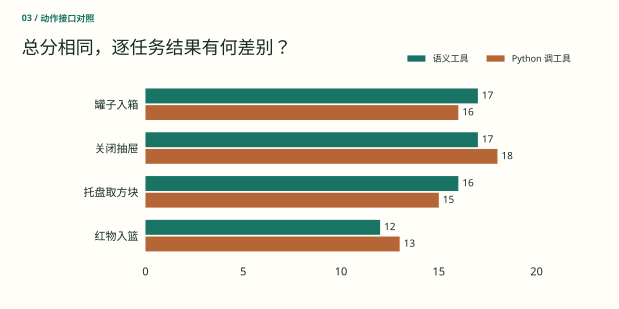
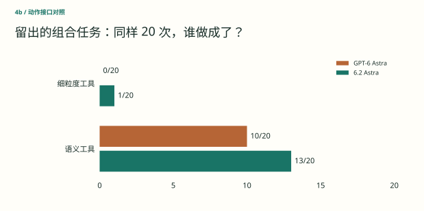
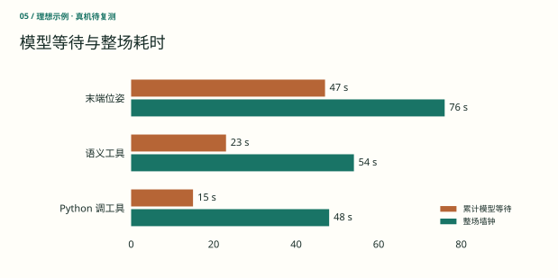
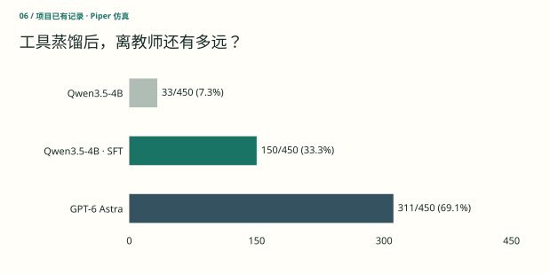

随机摆位叠方块
绿色方块在夹爪里时，单看它的位置很容易误判叠放已经完成。用侧面视角看松爪和撤手：手指与方块之间出现间隙之后，上块是否还留在下块上？
这四段 EICaP 工作台录像记录了真实操作。时间按钮可以直接播放关键动作，保留原始节奏，包括手停下来等待的时间。每段对应一次任务记录；录像没有逐场绑定模型版本、动作接口和评测日志，因此只据画面讨论操作难点。
绿色方块在夹爪里时，单看它的位置很容易误判叠放已经完成。用侧面视角看松爪和撤手：手指与方块之间出现间隙之后，上块是否还留在下块上？
红块夹在蓝、黄两个物体之间，黑盒在桌面另一端。先看手指从哪一侧接近，再看抬升时哪些物体跟着移动。放入盒内的末帧可以核对落点，途中有没有擦碰则要回看接近和抬升。
四块积木分到白盘和黑盒。每放好一块，再看桌面上还剩哪些同色方块。可以从第一次蓝块搬运跳到后半段的红块，再停在终局逐个核对两个容器。一次抓对颜色，只解决了这段任务的一部分。
三个倒扣的杯子遮住桌面。把视频停在揭杯前，再看杯子抬起时新露出的区域：哪些位置已经查过？一旦杯子挪动，画面里的“左边那个”就不再是可靠的身份标记。最后可以看到黄色小块出现在红盘中。
设想一次罐子入箱的抓空。相机里，夹爪对准了罐口，手指却从罐身旁边落下。若上一条命令是末端位姿，我们能检查 GPT 填的坐标，再对照手实际上走到哪里。若上一条是“抓这个罐子”，同一段录像里还藏着一次目标定位、一次接近和一次闭合。最后都是抓空，下一次该改的东西却不同。
我们试过让 GPT 直接给位姿，也试过逐次选工具、写 Python 调工具。Guava 把教师和学生接到同一套工具与反馈上，给了我们逐步蒸馏的参照。另一路 ENPIRE 把复位、任务验证和策略改进串进真机实验循环。本文固定在 Piper 上，比较的是每次模型决策应该交给执行器多少工作。 Guava 项目 · ENPIRE 项目
在苹果与果汁排序的仿真里，我们固定了两个桌面摆位，沿用同一种指尖抓法，只改变容器在模型里的质量。每次脚本执行九个工具动作。约 69 g 和 138 g 时，两种摆位都排对了；约 207 g 时，两次都没排对。六次的运动错误栏都是空的。

差别出现在第一次抬升。复核抓取、抬升和终帧后，看到较重的容器没能随夹爪完成转运，仍留在原处。若工具只返回“手到达目标位姿”，上层甚至没有理由重新抓一次。因此下面比较细工具和语义抓取时，我们始终问它们能否看到同一件事：夹爪抬起以后，物体跟上了吗？这六次是仿真脚本诊断。两个摆位、三个质量点，无法给出真机的载荷上限。
在桌上推一只罐子，如果只看顶视录像，五种接口都可能表现为夹爪先向左、再下降、最后闭合。把录像停在下降前，区别才显出来。直接控制的模型已经承诺了一个落点；逐次调用的代理可能只是选中了罐子，落点仍待定位工具返回；写程序的代理可能早已写好了下降指令，却要等一个条件变成真才会执行。我们把这三个时刻分别记为选目标、提交命令和实际接触。录像里的机械臂只动了一次，决策记录里却有三种解释。
这决定了我们想从实验里拿走什么。如果模型给错坐标，在图像上投出那一点通常就能暴露问题。如果坐标给对了、执行工具却撞到相邻物体，换一个更强的模型很难解释或修复这次失败。反过来，若定位工具持续锁错物体，而末端控制的模型能从新图像里自行纠正，工具也可能把模型本来具有的能力挡在接口之外。我们希望两种方向的样本都留在文章里，尤其是那些与平均排名相反的样本。
第一个问题是换一代 GPT 后，同一个动作接口能多做成哪些事。这要纵向读同一接口的两行。第二个问题是固定模型后，多给一点执行抽象究竟值多少。这要横向读同一批摆位上的两种接口。第三个问题涉及交互节奏：即使成功数一样，一种方法是否更早发现抓空，或者在发现后少花一次往返？这个答案往往只藏在时间线上。下面分别给出能回答这三个问题的图，并保留一个独立的仿真对照来讨论蒸馏。
理想对照用同一台 Piper、同一相机标定、相同的初始图像与任务指令。取四种会暴露不同错误的任务：罐子入箱看抓取与释放，关闭抽屉看接触中的跟踪，托盘取方块看狭小空间，红物入篮看多目标绑定。每项预设 20 个摆位；按标记复位并拍照，同一摆位轮换模型和接口的运行顺序。
成功按任务终态判定，并额外记录误抓、碰撞、保护停止和超时。各接口共享速度、工作空间、控制步数上限与墙钟时限；Python 循环和语义工具内部的动作都占预算。指令与相机证据相同，提示只更换必要的动作格式。两代模型使用各自锁定的配置，复测时记录确切服务版本。
罐子入箱适合检查定位、接近和释放是不是串成了一件完整的事。罐子一旦离开桌面，还可能在箱沿滑落；末端到达箱子上方不能提前算成功。关闭抽屉提供了不同的接触过程：手有可能准确到了把手附近，却没有沿抽屉行程持续施力。录像应能看到抽屉本体相对柜体的变化，而不仅是手退回原处。两项任务一个有自由物体、一个有关节约束，同样的“终点误差”在两者上的意义不同。
托盘取方块要求夹爪从有限的侧向净空中进入。只看起点和终点，会漏掉途中擦到托盘边缘又把方块带出来的情形。红物入篮则故意保留相似颜色和相邻物体，需要在移动前绑定正确实例，又要在第一次搬运后重新识别剩余目标。把四项放在一起，是为了让一次方法改动可以有局部收益与局部代价。若只选某个抓罐布局，改一段进场路径就足以让整张榜单换序。
真机很难恢复出两个像素级相同的世界。我们拟为每个摆位保存俯视参考图、容器朝向、夹爪起点和编号。每跑完一场，按标记复位再拍起始图，在运行模型前确认关键接触面和遮挡关系可比。若罐身倾倒或抽屉起始开度偏离约定，就重新摆场并记下原因。已经发出任务后才发现异常的场次另行标注，保留原始结果。这样做尤其重要，因为较难复位的场景也往往是更容易失败的场景。
五种接口、两代模型、四项任务、每项二十个摆位，对应八百个计划试次；物理摆位只有八十种。一行的八十场可以计算成功率，同一摆位上的十次尝试却不能当十个独立场景。为减少次序影响，方法的先后应随摆位轮换，并记录每次换电、重标定和中断。若当天只来得及做一半，就先完整做完部分摆位的所有条件。把容易的半天都给一个模型，回头很难解释两行结果的差异。
关节接口里，模型必须同时考虑腕部方向、肘部构型和每个关节的可达范围。末端接口把一部分工作交给本地逆运动学，但是相机坐标、基座坐标以及夹爪法兰到指尖的偏移仍要有清楚的约定。两种方式都使用同一台机器人的限位与速度约束，拒绝的请求照样记入决策预算。我们会保存模型请求的数值、控制器接受的目标、实际走到的位置；否则被控制器拒绝和根本没有发出动作，在视频里看起来都是“没动”。
读这组回放先看手腕，后看物体。若关节方式已经把手送到附近，问题可能集中在最后的夹爪朝向；若末端方式在远处就停住，要看逆运动学是否找到解。给一边补一个手写中间路点会改变要比较的条件。更有意义的补充试验是把两边失败的第一条命令固定下来，只改变表示方式，检验错误是否发生在从图像到目标的转换上。
| 接口 | 罐子入箱 | 关闭抽屉 | 托盘取方块 | 红物入篮 | 合计 |
|---|---|---|---|---|---|
| 关节目标 | 6 / 10 | 9 / 12 | 5 / 9 | 2 / 4 | 22 / 35 |
| 末端位姿 | 13 / 18 | 14 / 17 | 11 / 16 | 5 / 10 | 43 / 61 |
| 细粒度工具 | 11 / 13 | 12 / 13 | 10 / 12 | 6 / 8 | 39 / 46 |
| 语义工具 | 17 / 18 | 17 / 18 | 16 / 18 | 12 / 14 | 62 / 68 |
| Python 调工具 | 16 / 17 | 18 / 18 | 15 / 17 | 13 / 15 | 62 / 67 |
假设补测得到图 1 这样的结果：旧版直接给末端位姿为 43/80，语义工具为 62/80，相差 19 次。换 6.2 后两项分别是 61/80、68/80，只相差 7 次。此时值得写进结论的是“在这组任务上，换模型缩小了末端控制与工具调用的差距”。只重测新版的直接控制，会漏掉工具路线本身也有进步。
按任务拆开会看到另一个故事。在理想的 6.2 对照里，罐子入箱两种接口都是 18/20，红物入篮则是 10/20 对 14/20。优先回看这四次净差对应的摆位：模型选错了红物，还是选对了物体却在靠近时碰到邻物？净差本身也不能告诉我们两种方法具体在哪几条上互有胜负。
整体成功率适合读排序，不适合找原因。下图把同一接口的两代模型逐格相减。每格分母都是二十，所以增加一次成功代表五个百分点。末端位姿在四项上分别净增五、三、五、五次；语义工具对应一、一、二、二次。后者在一些任务上的起点已经接近二十，剩余上升空间较小。比较斜率前先读起点，否则容易把接近上限带来的压缩误判为模型只学会了某一种接口。

托盘是这张图里值得单独拿出来看的例子。示例中末端方式从十一场升到十六场，而语义工具从十六场升到十八场。假设两组录像都能看到夹爪接近了方块，我们还要问：改善发生在第一次下降前，还是发生在一次接触托盘边缘后的再观察？前者更接近空间定位能力，后者更接近闭环纠错。只有带上从碰边到下一条命令的片段，才能决定应把这五次净增记在哪一类行为上。
下面的配对图给出一份与总数完全相容的示例分解。两种接口都成功的五十八场解释了大部分共同能力，两者都失败的九场更可能暴露共同的难点。对选择接口最有信息的是中间的十三场：十场只用语义工具成功，三场只有直接给位姿成功。相减恰好是七，但真正值得逐帧看的有十三场。若只给出较好方法独有的十段视频，就看不到工具接口在哪些场景里引入了约束。

如何挑一段反例？先在仅末端成功的小组中按摆位编号排序，取第一段能完整追溯命令和返回的记录，再以相同规则在仅工具成功的小组取一段。前者可以问工具是否拒绝了一个实际可行的斜向接近，后者则可以问局部控制能否吸收模型的一次小偏差。这些都是看录像前提出的问题。若两场回放最后显示的只是目标被复位者摆偏，就应把这两条标成复位问题，不应硬写成接口能力的差别。
两边都失败的场景可以帮我们决定是否值得继续换模型。假如狭窄摆位上两组都在同一处失去视野，先改变相机观测可能比反复尝试更有信息。也可能一边由于预算用尽退出，另一边却是在正确识别后撞到了邻物。两次相同的零分并不自动支持“任务太难”。正式版应同时列出任务判据、第一处可见偏差、导致终止的事件。它们可以属于三个不同的时刻，不能用最后一条报错覆盖前面的过程。
假设指令是“把方块从托盘拿起来”，第一次闭合后方块仍在盘里。下列是同一套底层能力的教学伪代码，函数名仅用于说明接口；示例不计入试验。
target = locate('cube')
approach = pregrasp(target)
move_to(approach)
align(target)
descend(target)
close_gripper()
lift_short()
read_holding()每一行都是一次工具调用；逐次代理读完返回，再决定下一行。
target = locate('cube')
result = grasp(target)
# result.holding = falsegrasp 在本地完成同样的接近、对齐、闭合与短抬升；返回未持握后，再由模型决定是否重定位。
两边都得实际闭合并抬升，也都能看到同一份持握证据。细工具把当前实例、姿态和重试位置的衔接留给多轮模型调用；语义工具在一个调用内保持这段衔接。若粗工具偷偷多抓一次，必须按一次新的底层尝试记账。
讨论中提到，少量偏语义的工具比把动作拆得很细更好用。原因有两个互相竞争的解释。其一，模型少做了几次本可以由控制器稳定完成的坐标传递；其二，一个“抓取”内部可能已经包含了更好的定位或重试。只比较工具名字的数量，区分不了它们。
| 选择方式 | 成功 | 每场模型决策中位数 |
|---|---|---|
| 细粒度工具 | 39/80 | 15 |
| 语义工具 | 62/80 | 7 |
| Python 调工具 | 62/80 | 3 |
表中的 Python 和逐次语义调用总分恰好相同。程序可以提前写“持握成立才抬升”，抓空后能立即走本地分支；如果持握反馈有误，这段程序也会更快执行错误分支。因此我们想公开每次模型决策、底层执行次数和持握证据。一次生成的循环可能实际抓了三遍。
最干净的复测是把同一条粗工具的调用记录展开成细原语，逐项核对定位器、夹持阈值、接近路径和允许重试次数。再比较由 GPT 重新组织这些原语的版本。如果收益只在启用工具内重定位后出现，就应把收益记给执行器。
在红物入篮的一个历史失败场景里，目标番茄已经定位正确，抓取工具却在下降时报告未到位。把每段采用的姿态和指尖目标叠在一起，才发现程序按上一段姿态换算指尖偏移，路径规划器随后又选了新的倾角。下降过程中，指尖横向偏了约 5.4 mm。重新询问教师“哪个是番茄”解决不了这个错误。
我们让每段运动使用同一姿态换算指尖目标，再回放两个历史场景。两场都完成了 14 个动作，结束后各保持成功 10 个检查步。换两个新摆位时只成功一场，另一次接近罐子时碰到了相邻的土豆。于是我们又给抓取工具加入当前 RGB-D 视图里的邻物检查。这个排查说明为什么要保留工具内部日志，也说明两个修好的场景不足以估计真机成功率。
把九月的经验还原成可检验的问题，需要先把感知和动作的责任拆开。对于“拿红色物体”，代理先决定描述哪个对象，定位器把描述绑定到实例，抓取工具再为这个实例选择进入方向。模型可能从一开始就选错，也可能描述完全正确而掩码粘上邻物，还可能前两步都正确、手指在下降时擦到了旁边的土豆。若日志只有一条“抓取失败”，事后无论把错归给模型、视觉还是几何，都缺一段证据。

这张示例图把每场失败只放进一个主因栏。用第一处能由观测复核的偏差做主因，其余事件允许作为附注。旧模型末端接口的三十七场失败与语义工具的十八场失败正好对应图一的两个分母。定位类的绝对数减少，并不说明定位器本身变好了；粗工具可能只是延迟了提交姿态的时刻，从而得到更新的一帧。要区分两种解释，可以将两种接口冻结在同一观察时刻，重放同一个目标绑定，并核对第一处偏差是否仍然存在。
在真机上怎么复查前面的果汁案例？先记录容器实测质量与夹持高度，把顶视和侧视停在第一次短抬升处。对照同一时间戳下的命令、工具返回与容器底部：它是否离桌，是否跟随手运动，是否在转运中掉落？手腕遮住物体时，先记“看不清”。只留释放时的最后一秒，会把抓空、滑脱和落地后滚走混成一种失败。
对同一个抓空，逐步工具代理要等下一次模型调用才决定是否重定位；生成的程序可以先判断持握标志，再决定走哪一条支路。后者省去了网络往返，但也比逐步代理更依赖返回值的含义。若返回只有“指令未报错”，一个预写的条件判断可能永远走不到重试分支。这也是为什么我们把逐次语义调用和 Python 都接在同一组工具上。替程序额外加一个高质量的持握检测器，就已经同时改变了两个变量。
程序版本的录像要显示从第一次失败到下一次可靠观测的完整过程。我们会查它拿到的是新的目标位置，还是重用了上一次成功检测的缓存；也会查循环是否一次又一次地尝试同一个已检查物体。杯子游戏的诊断中，按图像左右排序能在一帧里区分杯子，搬走一个杯子后，新的“左边第一个”却未必是原来的那个。能区分同一帧里的实例，与能跨动作记住哪个实例已经检查过，是两种能力。
我们为补测留出一条新的任务指令：“把托盘内的方块放进已打开的抽屉，然后关好抽屉。”训练或调接口时分别见过取方块和关抽屉，但本对照把这条组合指令及其摆位留到最后。这里 OOD 指相对于本次开发任务的组合变化；模型预训练中是否见过类似指令未知。
两套冻结接口都可以抓、移、释放、推；不给语义工具新增“方块入抽屉”这样的整任务函数。20 个新摆位在两代模型、两套接口间配对复用，新增 80 个计划试次，与主实验的 800 次分开。物体完整留在抽屉里、夹爪撤出、抽屉关闭并保持，才记一次完整成功。若方块进去了但抽屉没关好，只记阶段进展。
| 模型 | 主实验 · 细 / 语义 | OOD · 细 / 语义 |
|---|---|---|
| GPT-6 Astra | 39/80 · 62/80 | 0/20 · 10/20 |
| 6.2 Astra | 46/80 · 68/80 | 1/20 · 13/20 |

在这组理想数值里，GPT‑6 用细工具没能完整做成一场，6.2 只做成一场，语义工具分别做成十场和十三场。要定位差距，先看方块第一次离开托盘，再看释放后哪一轮开始处理抽屉。细粒度代理可能抓得起来，却在抓取、释放和切换到推动之间反复重建局部状态，最后耗尽动作预算。语义代理也可能拿到正确的持握返回，却把方块放在会卡住抽屉的边缘。这是两种可用轨迹验证的解释，尚无真机计数支持因果归因。
从托盘取块再关抽屉，比单独关抽屉多了几次交接。即使每一步的可靠性都一样，整场成功率也可能随步骤增多而下降。要检验新的组合本身是否更难，我们还需要一条开发时见过、底层动作数相近的组合指令。在相同机位、动作预算和重试规则下复测，语义工具内部的每次重抓也要计入。
正式结果应为细工具和语义工具各列三项，分母始终是原来的 20 个摆位：方块离开托盘、方块释放后仍在抽屉内、机械臂退出且抽屉保持关闭。两组若主要在第二项分开，先回放搬运和释放；若前两项接近而只有第三项分开，再检查推动和预算。真实阶段计数等复测后填写。
9 月的实机印象是直接输出末端位姿时“走一段，等一下”。一段正常速度播放、带时间戳的录像应能让读者看到停顿。我们会从发出请求、收到可执行命令、机械臂开始运动、工具返回这四个时刻拆解等待。
| 接口 | 累计模型等待中位数 | 整场耗时中位数 |
|---|---|---|
| 末端位姿 | 47 s | 76 s |
| 语义工具 | 23 s | 54 s |
| Python 调工具 | 15 s | 48 s |
这里的模型等待按每场累计，再对场次取中位数；整场时间从任务发出到停止。两个中位数相减无法还原机械臂的运动时间。若请求与运动并行，还要把时间区间对齐，区分推理花了多久、机械臂实际空等了多久。
一次模型请求从发出到获得可执行回复，可能跨过多个视觉编码与网络阶段。一次工具调用从执行开始到返回，也可能包括本地感知、运动和等待稳定。最容易犯的错是把这两段都算成机械臂“停着没做事”。因此在视频上我们会对齐三个时钟：服务请求的起止、运动指令的起止、相机实际拍到动作的时刻。前两者来自软件，第三者用来发现排队或缓冲造成的偏移。它们都应对应同一场次、同一段连续时间。

例如在罐子已经抓稳之后，本地程序完全可以发出转运命令；逐次代理则可能先看一帧确认持握，再请求下一步。省略这帧会更快，但遇到滑脱也更晚发现。真实比较应把短暂停顿分成“等待新证据”和“已经有证据但等待模型决定”两种。对前者，删掉模型请求不一定能省时间；对后者，则可以试着把明确的条件写入程序。这也是我们要保留原速视频的原因，加速回放会让两种停顿都显得无关紧要。
整场耗时的中位数还会被终止策略影响。一种方法如果经常在第一步就碰到限位退出，统计上可能比每次都坚持到重试上限的方法更快。正式结果需要同时列成功场的完成时间、全部计划场次的墙钟时间和超时数；保护停止也要保留在分母里。若按时间上限比较，最直接的问题是给定同样的现实时间，在截止前有多少场真正达到了任务终态。这样才能把快速放弃和快速完成区分开来。
当模型推理与动作在后台重叠，累计请求时间依然有成本意义，却不能直接解释视频长度。假如一次抬升用了三秒，同时模型花两秒准备下一条指令，机械臂可能没有空等；但是准备动作依赖旧图，若物体在抬升中脱手，这条指令提交前仍需检查。对简单、可逆的运动，提前准备的收益较大；涉及闭合或释放的动作，晚一帧再做决定可能更稳妥。这个取舍要逐段观察，不能从每秒模型调用次数直接推出。
前面的工作台录像可以逐帧查看物体如何运动。下面的配对实验还需要同摆位、同机位、可核对接口和动作日志的两场录像。同一场的顶视和侧视则按时间戳同步，逐项对照模型看到的画面、它发出的命令、物体实际怎么动。
对齐夹爪闭合的一帧，再向后看第一次抬升。左侧核对请求位姿与指尖位置；右侧核对工具返回的持握状态与罐子有无离桌。记录模型何时获得足以重试的证据。
并排标出模型第一次选中的物体和夹爪最终接触的物体。若两边都选对了，差异才可能来自接近路径或受遮挡后的处理。
在抽屉首次接触、推进、松开三个时刻对齐工具日志。看新版改变的是落点、接触后的修正，还是仅仅缩短了停顿。
每组先看左、右两段原速全程，再看接触前后的慢放。第一遍请先遮住模型名字，只按任务要求判断最终有没有做成；第二遍再打开命令、工具返回与时间轴，追踪两种方法从哪一刻开始分歧。这样可以避免看到“新模型”就把一个很普通的中途调整解释成更强的推理。即使两边都成功，也应保留一次代表性对照，因为两条路线可能达到同一终态，却分别用了不同数量的接触尝试和模型回合。
请看松手后的抽屉前板，而不是只看最后一次向前推的动作。相机斜视时，夹爪会遮住柜体边沿，看起来贴合可能只是投影重叠。现场若有独立侧视录像，可以把它用于事后评分；若它没有提供给模型，就不要据此指责模型“应该看见”。同样，模型说“任务完成”并不是机械判据。我们的恢复分支里有过教师提前宣布完成、原任务判据仍为假的记录。这类样本对解释闭环在哪断掉，比剪一段快速成功视频更有用。
还有一种回放应特意保留：推完以后，环境给出与工具预期不一致的证据。在仿真恢复分支中，我们能从已经关闭的抽屉状态重新打开滑动关节，验证原任务成功标志由真变假，再给教师故障后的画面。这是人为注入的仿真扰动，有明确触发点；真机录像若没有受控的重开过程，就只能作为自然失败或自然恢复来描述。两段视频可能都长得像“抽屉又开了”，但用来回答的问题不同。
工具接口还有一个实际用途：把“看到什么、调用什么、收到什么”交给学生学。我们在 Piper 仿真中保存了 667 条基础轨迹和 374 条恢复分支，共 1,041 条。教师为 GPT‑6 Astra，学生为 Qwen3.5‑4B。一次训练加载检查发现，原文件虽然保存了工具调用，加载器却会漏掉相应监督内容。这也是我们要把模型请求与工具实际执行逐项核对的原因。
| 策略 | 成功 / 尝试 | SR |
|---|---|---|
| Qwen3.5-4B | 33 / 450 | 7.33% |
| Qwen3.5-4B · SFT | 150 / 450 | 33.33% |
| GPT-6 Astra | 311 / 450 | 69.11% |
蒸馏让同一个学生净增 117 次成功。这是工具调用能被部分学习的证据；比较真机的两种控制接口仍要回到前面的配对实验。训练导出保留了原审核标签，含 27 条此前被拒绝的记录，这也限制了对数据质量的解读。
把一段抓取录像交给小模型，并不会自动产生可用的工具监督。对于第七步调用，学生应看到的是前六步当时真实可得的证据，以及第七步前的图像；监督答案是教师此刻发出的请求。如果执行器在接到这个请求后重新定位、把落点向外挪了一点，最后夹住了罐子，改过的落点属于工具执行记录。把它倒填成教师早先给出的答案，会在训练时泄露当时还不知道的信息。这种数据看起来很干净，部署时却无法重现。
恢复分支让这个问题更加明显。中间状态既要继承同一个父本，也要确认扰动真的改变了世界。我们遇到过恢复后工具绑定被旧注册表覆盖，以及故障前缓存的图像与故障后场景不一致的风险。如果教师看到的是旧图，却被要求对故障做出“正确恢复”，即使最后任务成功，这段对话也很难解释。为此，分支数据里需要分开保存父检查点、故障注入结果、教师实际收到的当前帧和后续工具返回；训练时再明确哪些回合属于新增监督。

这张图中学生增加的一百一十七次成功，是同一套原生判据下两个总数的净差。把学生相对起点的提升除以教师与起点的差距，得到约百分之四十二。这是对这个评测汇总的一种描述：它没有告诉我们学生复制了教师哪一条轨迹，也不意味着真机上同样比例的能力可以迁移。举例来说，推篮的大幅提升可以抬高总分，而某些需要多物体排列的任务仍可能一次都做不成。任务分布与总数应当同时出现。
要追问模型到底学会了什么，训练轨迹的长度也有两种口径。录像的仿真执行时长衡量机械臂实际运动了多久，模型调用的等待则描述采集成本；恢复分支还继承父对话，不能把重复的前缀又算一遍独立经历。我们的数据导出曾发现，工具调用在原文件里齐全，进入训练加载器后却缺了相应内容。核对“多少条”“多少小时”之前，首先得逐轮检查学生真正看到的图、参数和损失掩码是否对应。
我们会先补同一摆位上的 GPT‑6 与 6.2 末端控制、语义工具四组录像。这四格能判断旧模型上的接口经验是否延续。随后再补关节目标、细原语与 Python。后两者尤其需要保留工具内部记录，否则更少的模型调用容易被误读为更少的机器人尝试。
可推翻我们判断的证据同样值得留在博客里。若动作预算与定位器对齐后，细工具追平语义工具，优势就更可能来自现成执行代码。若新版在单物体任务追平，但在遮挡时仍抓错相邻物体，下一步应优先检查目标绑定。正式稿会报告逐摆位胜负、失败和保护停止，并说明相机、载荷和控制参数的适用范围。
第一种可能是新版直接输出末端位姿后，在简单物体上与语义工具持平，而且在工具无法稳定绑定目标时出现更多独有成功。那就应该把轻量的直接接口保留下来，在需要时才查询几何。第二种可能是语义工具依然表现最好，但与细工具共享同一个局部重定位器后差距消失。那会把工作重点从提示或模型调度移到执行器复用。两种结果都能推进设计，只公布首选方法获胜的场景却不能区分它们。
还有一个更朴素的判断：若固定预算后各接口的差别小于两次独立复位带来的变化，文章就应先汇报摆位、光照与相机变化的影响。尤其在每个任务只有二十个初态时，一条轨迹就能改变五个百分点。要再宣称某种接口普遍占优，应增加独立布局、区分单物体与多物体，并给出配对的不确定性。眼下我们更愿意给读者留下一个可以自己查验的问题：把某一次最漂亮的成功换成同一摆位上的另一种输出，究竟是哪一步开始不一样？
图 1 至图 5（含 OOD 图 4b）、表 1、表 2 和表 4 均为理想示例。 成功数、等待时长、决策次数、每任务 20 个摆位及由此得到的差值，均为展示理想博客而设计。GPT‑6 的两条路线和工具粒度的定性经验来自 11 月 24 日会议对 9 月试验的回顾。6.2 Astra 与直接关节控制属于会上建议补测的条件。
诊断图 S1 引用已完成的仿真质量敏感性试验。表 3 和图 6 引用同一份 Piper 仿真评测记录。四段工作台录像来自 11 月 17 日以前的 EICaP 真机任务。十组成对接口录像仍待补齐；正式发表时用逐场日志重新计算示例图表，再按回放修订案例说明。